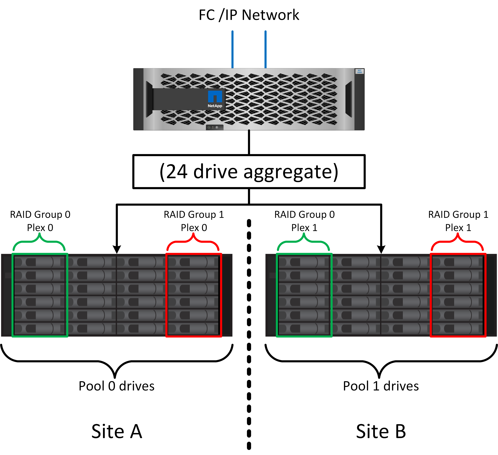
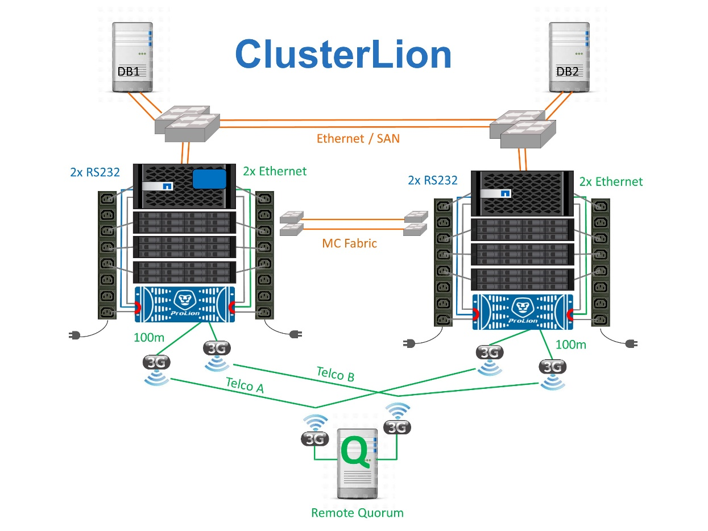

Microsoft SQL Server
Microsoft SQL Server
MetroCluster逻辑架构和Oracle数据库
 建议更改
建议更改
要了解Oracle数据库如何在MetroCluster环境alsop中运行、需要对MetroCluster系统的逻辑功能进行一些说明。
站点故障保护：NVRAM和MetroCluster
MetroCluster通过以下方式扩展NVRAM数据保护：
-
在双节点配置中、NVRAM数据通过交换机间链路(ISL)复制到远程配对节点。
-
在HA对配置中、NVRAM数据会同时复制到本地配对节点和远程配对节点。
-
写入只有在复制到所有配对项后才会得到确认。此架构通过将NVRAM数据复制到远程配对节点来保护传输中的I/O免受站点故障的影响。驱动器级数据复制不涉及此过程。拥有聚合的控制器负责通过向聚合中的两个plexes写入数据来进行数据复制、但在站点丢失时、仍必须防止传输中I/O丢失。只有当配对控制器必须接管发生故障的控制器时、才会使用复制的NVRAM数据。
站点和磁盘架故障保护：SyncMirror和plexes
SyncMirror是一种镜像技术、可增强但不会取代RAID DP或RAID-TEC。它会镜像两个独立RAID组的内容。逻辑配置如下：
-
驱动器会根据位置配置到两个池中。一个池由站点A上的所有驱动器组成、另一个池由站点B上的所有驱动器组成
-
然后、基于RAID组的镜像集创建一个通用存储池(称为聚合)。从每个站点提取的驱动器数量相等。例如、一个包含20个驱动器的SyncMirror聚合将由站点A的10个驱动器和站点B的10个驱动器组成
-
给定站点上的每组驱动器都会自动配置为一个或多个完全冗余的RAID DP或RAID-TEC组、而不依赖于镜像的使用。在镜像下使用RAID可提供数据保护、即使在站点丢失后也是如此。

上图显示了一个示例SyncMirror配置。在控制器上创建了一个包含24个驱动器的聚合、其中12个驱动器来自站点A上分配的磁盘架、12个驱动器来自站点B上分配的磁盘架这些驱动器被分组为两个镜像RAID组。RAID组0在站点A上包含一个6驱动器丛、该丛镜像到站点B上的一个6驱动器丛同样、RAID组1在站点A上包含一个6驱动器丛、该丛镜像到站点B上的6驱动器丛
SyncMirror通常用于为MetroCluster系统提供远程镜像、每个站点有一个数据副本。有时、它会用于在单个系统中提供额外的冗余级别。尤其是、它可以提供磁盘架级冗余。驱动器架已包含双电源和控制器、总体比金属板稍多、但在某些情况下、可能需要额外保护。例如、一家NetApp客户为汽车测试期间使用的移动实时分析平台部署了SyncMirror。该系统分为两个物理机架、配有独立的电源和独立的UPS系统。
冗余故障：NVFAIL
如前文所述、写入操作只有在至少另一个控制器上记录到本地NVRAM和NVRAM后才会得到确认。此方法可确保硬件故障或断电不会导致传输中I/O丢失如果本地NVRAM发生故障或与其他节点的连接发生故障、则无法再镜像数据。
如果本地NVRAM报告错误、则此节点将关闭。此关闭会导致在使用HA对时故障转移到配对控制器。使用MetroCluster时、行为取决于所选的整体配置、但可能会自动故障转移到远程便签。在任何情况下、数据都不会丢失、因为发生故障的控制器尚未确认写入操作。
站点间连接故障会阻止NVRAM复制到远程节点、这种情况更为复杂。写入操作不再复制到远程节点、因此、如果控制器发生灾难性错误、可能会导致数据丢失。更重要的是、在这些情况下尝试故障转移到其他节点会导致数据丢失。
控制因素是NVRAM是否同步。如果NVRAM已同步、则可以安全地进行节点间故障转移、而不会丢失数据。在MetroCluster配置中、如果NVRAM与底层聚合plexes处于同步状态、则可以安全地继续执行切换、而不会丢失数据。
除非强制执行故障转移或切换、否则ONTAP不允许在数据不同步时执行故障转移或切换。以这种方式强制更改条件即表示数据可能会留在原始控制器中、并且数据丢失是可以接受的。
如果强制执行故障转移或切换、则数据库和其他应用程序尤其容易受到损坏的影响、因为它们在磁盘上维护着更大的内部数据缓存。如果发生强制故障转移或切换、先前确认的更改将被有效丢弃。存储阵列的内容会及时有效地向后跳转、缓存的状态不再反映磁盘上数据的状态。
为了防止出现这种情况、ONTAP允许对卷进行配置、以便针对NVRAM故障提供特殊保护。触发此保护机制后、卷将进入名为NVFAIL的状态。此状态会导致发生原因应用程序崩溃的I/O错误。此崩溃会导致应用程序关闭、以便它们不会使用过时数据。数据不应丢失、因为日志中应存在任何已提交的事务数据。通常的后续步骤是、管理员先完全关闭主机、然后再手动将LUN和卷重新联机。虽然这些步骤可能涉及一些工作、但这种方法是确保数据完整性的最安全方法。并非所有数据都需要这种保护、这就是可以逐个卷配置NVFAIL行为的原因。
HA对和MetroCluster
MetroCluster有两种配置：双节点和HA对。就NVRAM而言、双节点配置与HA对的行为相同。如果发生突然故障、配对节点可以重放NVRAM数据、以确保驱动器一致、并确保未丢失任何已确认的写入。
HA对配置也会将NVRAM复制到本地配对节点。简单的控制器故障会导致配对节点上的NVRAM重放、就像不使用MetroCluster的独立HA对一样。如果站点突然完全丢失、远程站点还具有必要的NVRAM、以使驱动器保持一致并开始提供数据。
MetroCluster的一个重要方面是、在正常运行条件下、远程节点无法访问配对节点数据。每个站点本质上都是一个独立的系统、可以承担相反站点的特性。此过程称为切换、其中包括计划内切换、在此过程中、站点操作会无系统地迁移到相反站点。此外、还包括站点丢失以及在灾难恢复过程中需要手动或自动切换的计划外情况。
切换和切回
术语切换和切回是指在MetroCluster配置中的远程控制器之间过渡卷的过程。此过程仅会对远程节点执行适用场景。如果在四卷配置中使用MetroCluster、则本地节点故障转移与前面所述的接管和恢复过程相同。
计划内切换和切回
计划内切换或切回类似于节点之间的接管或交还。此过程包含多个步骤、看起来可能需要几分钟时间、但实际发生的是存储和网络资源的多阶段平稳过渡。控制传输的速度比执行完整命令所需的时间快得多。
接管/交还与切换/切回之间的主要区别在于对FC SAN连接的影响。使用本地接管/备份时、主机会丢失指向本地节点的所有FC路径、并依靠其本机MPIO切换到可用的备用路径。端口不会重新定位。通过切换和切回、控制器上的虚拟FC目标端口将过渡到另一站点。它们实际上暂时不再存在于SAN上、然后重新出现在备用控制器上。
SyncMirror超时
SyncMirror是一种ONTAP镜像技术、可针对磁盘架故障提供保护。如果磁盘架相隔一段距离、则可以实现远程数据保护。
SyncMirror不提供通用同步镜像。结果是可用性更好。某些存储系统使用持续的全镜像或无镜像、有时称为Domino模式。这种形式的镜像在应用程序中受到限制、因为如果与远程站点的连接断开、所有写入活动都必须停止。否则、写入将在一个站点上存在、而在另一个站点上不存在。通常、此类环境会配置为在站点间连接丢失的时间较短(例如30秒)时使LUN脱机。
这种行为适合一小部分环境。但是、大多数应用程序都需要一个解决方案、该系统可以在正常运行条件下提供有保障的同步复制、但可以暂停复制。站点间连接完全断开通常被视为近乎灾难的情况。通常、此类环境会保持联机并提供数据、直到修复连接或正式决定关闭环境以保护数据为止。仅由于远程复制失败而要求自动关闭应用程序的要求并不常见。
SyncMirror支持同步镜像要求、并具有超时的灵活性。如果与远程控制器和/或丛的连接断开、30秒计时器将开始倒计时。当计数器达到0时、写入I/O处理将继续使用本地数据。数据的远程副本可用、但会及时冻结、直到连接恢复为止。重新同步利用聚合级快照使系统尽快恢复到同步模式。
值得注意的是、在许多情况下、在应用程序层实施这种通用的全Domino模式或全无Domino模式复制效果更佳。例如、Oracle DataGuard包括最大保护模式、可保证在任何情况下进行长实例复制。如果复制链路出现故障的时间超过可配置的超时时间、数据库将关闭。
使用光纤连接MetroCluster自动执行无人看管切换
自动无人值守切换(Automatic无人值守切换、AUSO)是一项光纤连接的MetroCluster功能、可提供一种跨站点HA形式。如前文所述、MetroCluster有两种类型：每个站点上一个控制器或每个站点上一个HA对。HA选项的主要优势是、计划内或计划外控制器关闭仍可使所有I/O都位于本地。单节点选项的优势在于降低成本、复杂性和基础架构。
AUSO的主要价值是提高光纤连接MetroCluster系统的HA功能。每个站点都会监控相反站点的运行状况、如果没有节点可提供数据、则AUSO会导致快速切换。在每个站点只有一个节点的MetroCluster配置中、此方法尤其有用、因为它使配置在可用性方面更接近HA对。
AUSO无法在HA对级别提供全面监控。HA对可以提供极高的可用性、因为它包含两根冗余物理缆线、用于节点到节点的直接通信。此外、HA对中的两个节点均可访问冗余环路上的同一组磁盘、从而为一个节点提供另一条路由来监控另一个节点的运行状况。
MetroCluster集群存在于节点间通信和磁盘访问均依赖于站点间网络连接的站点之间。监控集群其余部分的检测信号的能力有限。在另一个站点因网络问题而实际关闭而不是不可用的情况下、AUSO必须区分这种情况。
因此、如果HA对中的控制器检测到因特定原因(例如系统崩溃)而发生的控制器故障、则该控制器可能会提示接管。如果完全断开连接(有时称为丢失检测信号)、它还会提示接管。
只有在原始站点上检测到特定故障时、MetroCluster系统才能安全地执行自动切换。此外、拥有存储系统的控制器必须能够保证磁盘和NVRAM数据保持同步。控制器无法仅因为与源站点断开连接而保证切换的安全性、而源站点仍可正常运行。有关自动执行切换的其他选项、请参见下一节中有关MetroCluster Tieb破碎 机(MCTB)解决方案的信息。
具有光纤连接MetroCluster的MetroCluster Tieb破碎 机
。 "NetApp MetroCluster Tieb破碎 机" 软件可以在第三个站点上运行、以监控MetroCluster环境的运行状况、发送通知、并在发生灾难时强制执行切换(可选)。有关Tieb破碎 机的完整问题描述、请参见 "NetApp 支持站点"但MetroCluster Tieb破碎 机的主要用途是检测站点丢失。它还必须区分站点丢失和连接丢失。例如、切换不应因TiebREAKER无法访问主站点而发生、这就是TiebREAKER同时监控远程站点联系主站点的能力的原因。
使用AUSO自动切换也与MCTB兼容。AUSO反应非常迅速、因为它可以检测特定的故障事件、然后仅在NVRAM和SyncMirror plexes处于同步状态时调用切换。
相反、Tieb破碎 机位于远程位置、因此必须等待计时器经过、然后才能宣布站点停机。Tieb破碎 机最终会检测到由AUSO涵盖的那种控制器故障、但通常、在Tieb破碎 机开始工作之前、AUSO已启动切换、并且可能已完成切换。Tieb破碎 机生成的第二个切换命令将被拒绝。
*注意：*强制切换时、MCTB软件不会验证NVRAM是否同步和/或plexes是否同步。如果已配置自动切换、则应在维护活动期间禁用、从而导致NVRAM或SyncMirror plexes失去同步。
此外、MCTB可能无法解决导致以下一系列事件的滚动灾难：
-
站点之间的连接中断30秒以上。
-
SyncMirror复制超时、并且会继续在主站点上执行操作、从而使远程副本过时。
-
主站点丢失。结果是主站点上存在未复制的更改。因此、切换可能不受欢迎、原因有很多、其中包括：
-
主站点上可能存在关键数据、这些数据最终可能是可恢复的。允许应用程序继续运行的切换将有效地丢弃这些关键数据。
-
运行正常的站点上的某个应用程序在站点丢失时使用了主站点上的存储资源、此应用程序可能已缓存数据。切换会导致数据版本过时、与缓存不匹配。
-
运行正常的站点上的某个操作系统在站点丢失时使用了主站点上的存储资源、此操作系统可能已缓存数据。切换会导致数据版本过时、与缓存不匹配。最安全的方法是、将Tieber4配置为在检测到站点故障时发送警报、然后由某人决定是否强制执行切换。可能需要先关闭应用程序和/或操作系统、才能清除缓存的任何数据。此外、还可以使用NVFAIL设置来添加进一步的保护、并帮助简化故障转移过程。
-
使用MetroCluster IP的ONTAP调解器
ONTAP调解器可与MetroCluster IP和某些其他ONTAP解决方案结合使用。它的功能与上述MetroCluster Tieb破碎 机软件非常相似、但也包括一项关键功能、即执行自动无人值守切换。
光纤连接的MetroCluster可以直接访问相反站点上的存储设备。这样、一个MetroCluster控制器就可以通过从驱动器中读取检测信号数据来监控其他控制器的运行状况。这样、一个控制器就可以识别另一个控制器的故障并执行切换。
相比之下、MetroCluster IP架构会通过控制器-控制器连接独占路由所有I/O；无法直接访问远程站点上的存储设备。这会限制控制器检测故障和执行切换的能力。因此、需要将ONTAP调解器作为Tieb破碎 机设备来检测站点丢失并自动执行切换。
使用ClusterLion的虚拟第三站点
ClusterLion是一种高级MetroCluster监控设备、可充当虚拟第三站点。通过这种方法、可以在双站点配置中安全地部署MetroCluster、并提供完全自动化的切换功能。此外、ClusterLion还可以执行额外的网络级监控并执行切换后操作。完整文档可从ProLion获得。

-
ClusterLion设备可通过直接连接的以太网和串行缆线监控控制器的运行状况。
-
这两个设备通过冗余3G无线连接相互连接。
-
ONTAP控制器的电源通过内部继电器供电。如果站点发生故障、包含内部UPS系统的ClusterLion会在调用切换之前断开电源连接。此过程可确保不会出现脑裂情况。
-
ClusterLion会在30秒SyncMirror超时时间内执行切换、或者根本不执行切换。
-
除非NVRAM和SyncMirror plexes的状态保持同步、否则ClusterLion不会执行切换。
-
由于ClusterLion仅在MetroCluster完全同步时执行切换、因此不需要NVFAIL。此配置允许站点范围的环境(例如扩展Oracle RAC)保持联机、即使在计划外切换期间也是如此。
-
支持包括光纤连接MetroCluster和MetroCluster IP